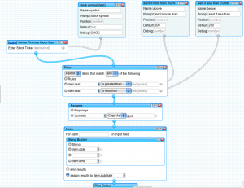

<?xml version="1.0" encoding="UTF-8"?>
<rss version="2.0"
	xmlns:content="http://purl.org/rss/1.0/modules/content/"
	xmlns:wfw="http://wellformedweb.org/CommentAPI/"
	xmlns:dc="http://purl.org/dc/elements/1.1/"
	xmlns:atom="http://www.w3.org/2005/Atom"
	xmlns:sy="http://purl.org/rss/1.0/modules/syndication/"
	xmlns:slash="http://purl.org/rss/1.0/modules/slash/"
	>

<channel>
	<title>ohadpr &#187; ohad</title>
	<atom:link href="http://ohadpr.com/author/ohad/feed/" rel="self" type="application/rss+xml" />
	<link>http://ohadpr.com</link>
	<description>ideas, hacks and stuff</description>
	<lastBuildDate>Tue, 29 May 2012 07:08:58 +0000</lastBuildDate>
	<language>en</language>
	<sy:updatePeriod>hourly</sy:updatePeriod>
	<sy:updateFrequency>1</sy:updateFrequency>
	<generator>http://wordpress.org/?v=3.3.1</generator>
		<item>
		<title>Explaining US car to Isralies</title>
		<link>http://ohadpr.com/2009/09/explaining-us-car-to-isralies/</link>
		<comments>http://ohadpr.com/2009/09/explaining-us-car-to-isralies/#comments</comments>
		<pubDate>Sun, 06 Sep 2009 06:48:06 +0000</pubDate>
		<dc:creator>ohad</dc:creator>
				<category><![CDATA[etc]]></category>

		<guid isPermaLink="false">http://ohadpr.com/?p=203</guid>
		<description><![CDATA[US auto insurance is complex, there are many components and many prices. I avoided this for a while, but eventually sat down to understand WTF is going on here. so here&#8217;s a translation of the terms, what&#8217;s important and what&#8217;s &#8230; <a href="http://ohadpr.com/2009/09/explaining-us-car-to-isralies/">Continue reading <span class="meta-nav">&#8594;</span></a>]]></description>
			<content:encoded><![CDATA[<p>US auto insurance is complex, there are many components and many prices. I avoided this for a while, but eventually sat down to understand WTF is going on here. so here&#8217;s a translation of the terms, what&#8217;s important and what&#8217;s not:</p>
<p>Bodily Injury &amp; Property Damange Liability &#8211; דפקתי איזה מניאק, אני אשם, משלם לו בית-חולים ונזקים. <strong>הכי חשוב</strong></p>
<p>Uninsured/Underinsured Motorist Bodily Injury &#8211; מניאק בלי ביטוח דפק אותי או את הנוסעים שלי</p>
<p>Uninsured Motorist Property Damage &#8211; מניאק בלי ביטוח דפק לי את האוטו כל עוד אני לא מונית ולא במירוץ</p>
<p>Medical payments &#8211; מניאק פגע בי או בבני משפחה, מכסים לי הוצאות רפואיות. בד&#8221;כ יש לך כבר ביטוח רפואי משלך</p>
<p>Comprehensive Coverage &#8211; השתתפות עצמית מנזק לרכב שלי לא מתאונה, לדוגמא ערס שבר לי חלון</p>
<p>Collision coverage &#8211; השתתפות עצמית מנזק לאוטו מתאונה</p>
<p>Rental car reimbursement &#8211; רכב חלופי</p>
<p>Roadside assistance &#8211; גרירה</p>
]]></content:encoded>
			<wfw:commentRss>http://ohadpr.com/2009/09/explaining-us-car-to-isralies/feed/</wfw:commentRss>
		<slash:comments>2</slash:comments>
		</item>
		<item>
		<title>twitpic and yfrog thumbnails</title>
		<link>http://ohadpr.com/2009/06/twitpic-and-yfrog-thumbnails/</link>
		<comments>http://ohadpr.com/2009/06/twitpic-and-yfrog-thumbnails/#comments</comments>
		<pubDate>Sun, 28 Jun 2009 07:12:30 +0000</pubDate>
		<dc:creator>ohad</dc:creator>
				<category><![CDATA[hack]]></category>

		<guid isPermaLink="false">http://ohadpr.com/?p=153</guid>
		<description><![CDATA[my facebook newsfeed is full of twits with links to images hosted on twitpic and yfrog. both twitpic and yfrog provide a super simple way to get thumbnails from these links. so, until facebook or some facebook-app does this for &#8230; <a href="http://ohadpr.com/2009/06/twitpic-and-yfrog-thumbnails/">Continue reading <span class="meta-nav">&#8594;</span></a>]]></description>
			<content:encoded><![CDATA[<p>my facebook newsfeed is full of twits with links to images hosted on <a href="http://twitpic.com/">twitpic</a> and <a href="http://yfrog.com/">yfrog</a>. both twitpic and yfrog provide a <a href="http://twitpic.com/api.do#thumbnails">super</a> <a href="http://code.google.com/p/imageshackapi/wiki/YFROGthumbnails">simple</a> way to get thumbnails from these links. so, until facebook or some facebook-app does this for me, i had to do it for myself.</p>
<p>here&#8217;s a simple bookmarklet <a href="javascript:(function(){document.body.appendChild(document.createElement('script')).src='http://'+'ohadpr.com/proj/twitpicfix/twitpicfix.js'})();">twitpicfix</a> that will convert this:</p>
<p><a href="../../../wp-content/uploads/2009/06/ohad-b4.png"></a>to this:</p>
<p><a href="../../../wp-content/uploads/2009/06/ohad-after.png"></a></p>
<p>and this:</p>
<p><a href="../../../wp-content/uploads/2009/06/yfrog-b4.png"></a>into this:</p>
<p><a href="../../../wp-content/uploads/2009/06/yfrog-after.png"></a></p>
<p>since i&#8217;m too lazy to write a firefox extension (and there&#8217;s already a <a href="http://83degrees.com/post/Adding_Features_with_Power_Twitter">PowerTwitter</a> that does some of this for the twitter website itself), so I hacked a bookmarklet that does it.</p>
<p>drag the bookmarklet <a href="javascript:(function(){document.body.appendChild(document.createElement('script')).src='http://'+'ohadpr.com/proj/twitpicfix/twitpicfix.js';})();">twitpicfix</a> to your links bar and click it whenever you have a bunch of twitpic/yfrog urls and want to preview them inline.</p>
<p>in fact, here&#8217;s a <a href="http://twitpic.com/892ti">http://twitpic.com/892ti</a> link, click the <a href="javascript:(function(){document.body.appendChild(document.createElement('script')).src='http://'+'ohadpr.com/proj/twitpicfix/twitpicfix.js';})();">twitpicfix</a> link and see what happens.</p>
]]></content:encoded>
			<wfw:commentRss>http://ohadpr.com/2009/06/twitpic-and-yfrog-thumbnails/feed/</wfw:commentRss>
		<slash:comments>0</slash:comments>
		</item>
		<item>
		<title>nice San-Francisco quote</title>
		<link>http://ohadpr.com/2009/06/nice-san-francisco-quote/</link>
		<comments>http://ohadpr.com/2009/06/nice-san-francisco-quote/#comments</comments>
		<pubDate>Sun, 21 Jun 2009 01:14:19 +0000</pubDate>
		<dc:creator>ohad</dc:creator>
				<category><![CDATA[etc]]></category>

		<guid isPermaLink="false">http://ohadpr.com/?p=148</guid>
		<description><![CDATA[&#8220;San Francisco is a city of misfits. And maybe thats why it’s so easy to fit in here. If it feels weird, we loved having you. If it feels right, welcome home.&#8221; thanks David Ulevitch for this one]]></description>
			<content:encoded><![CDATA[<p>&#8220;San Francisco is a city of misfits. And maybe thats why it’s so easy to fit in here. If it feels weird, we loved having you. If it feels right, welcome home.&#8221;</p>
<p>thanks <a href="http://david.ulevitch.com/">David Ulevitch</a> for this one</p>
]]></content:encoded>
			<wfw:commentRss>http://ohadpr.com/2009/06/nice-san-francisco-quote/feed/</wfw:commentRss>
		<slash:comments>0</slash:comments>
		</item>
		<item>
		<title>Download Kindle books</title>
		<link>http://ohadpr.com/2009/03/download-kindle-books/</link>
		<comments>http://ohadpr.com/2009/03/download-kindle-books/#comments</comments>
		<pubDate>Mon, 02 Mar 2009 23:07:46 +0000</pubDate>
		<dc:creator>ohad</dc:creator>
				<category><![CDATA[hack]]></category>
		<category><![CDATA[kindle azw gutenberg download]]></category>

		<guid isPermaLink="false">http://ohadpr.com/?p=141</guid>
		<description><![CDATA[just got my new Kindle 2 which is totally awesome. I found this website, http://manybooks.net/ which has tons of books from Project Gutenberg, it also has all the titles in the Kindle&#8217;s AZW format. My friend Amit Shafrir said it &#8230; <a href="http://ohadpr.com/2009/03/download-kindle-books/">Continue reading <span class="meta-nav">&#8594;</span></a>]]></description>
			<content:encoded><![CDATA[<p>just got my new Kindle 2 which is totally awesome.<br />
I found this website, <a href="http://manybooks.net/">http://manybooks.net/</a> which has tons of books from Project Gutenberg, it also has all the titles in the Kindle&#8217;s AZW format.</p>
<p>My friend <a href="http://twitter.com/ashafrir">Amit Shafrir</a> said it would be cool if there were some script that let you quickly <a href="http://twitter.com/ashafrir/status/1267425192">download</a> these AZW files, and so here it is.</p>
<p>It&#8217;s a bookmarklet, drag it -&gt; <a href="javascript:(function(){document.body.appendChild(document.createElement('script')).src='http://visual-i.com/kindle/manybooks_kindle_dl.js';})();">ManyBooksKindlify</a> &lt;- to your bookmarks toolbar and whenever you are on a page that lists books on <a href="http://manybooks.net/">http://manybooks.net/</a> click it to automagically have direct-kindle-download links inserted into the page (a little &#8216;k&#8217; icon).</p>
<p>You can start by visiting the <a href="http://manybooks.net/statistics_weekly.php">weekly most downloaded books</a> list.</p>
]]></content:encoded>
			<wfw:commentRss>http://ohadpr.com/2009/03/download-kindle-books/feed/</wfw:commentRss>
		<slash:comments>0</slash:comments>
		</item>
		<item>
		<title>Visual comments in code</title>
		<link>http://ohadpr.com/2008/10/visual-comments-in-code/</link>
		<comments>http://ohadpr.com/2008/10/visual-comments-in-code/#comments</comments>
		<pubDate>Thu, 16 Oct 2008 02:52:28 +0000</pubDate>
		<dc:creator>ohad</dc:creator>
				<category><![CDATA[ideas]]></category>

		<guid isPermaLink="false">http://ohadpr.com/?p=131</guid>
		<description><![CDATA[an idea i had a few years ago, bumped into it while skimming through my documents and figured its better online than offline. Visual Comments &#8211; Upload a Document to Scribd]]></description>
			<content:encoded><![CDATA[<p>an idea i had a few years ago, bumped into it while skimming through my documents and figured its better online than offline.</p>
<p><object id="doc_107963360877302" classid="clsid:d27cdb6e-ae6d-11cf-96b8-444553540000" width="100%" height="350" codebase="http://download.macromedia.com/pub/shockwave/cabs/flash/swflash.cab#version=6,0,40,0"><param name="name" value="doc_107963360877302" /><param name="align" value="middle" /><param name="quality" value="high" /><param name="play" value="true" /><param name="loop" value="true" /><param name="scale" value="showall" /><param name="wmode" value="opaque" /><param name="devicefont" value="false" /><param name="bgcolor" value="#ffffff" /><param name="menu" value="true" /><param name="allowFullScreen" value="true" /><param name="allowScriptAccess" value="always" /><param name="src" value="http://documents.scribd.com/ScribdViewer.swf?document_id=6889812&amp;access_key=key-cx7jqhysmqya567wiu1&amp;page=&amp;version=1&amp;auto_size=true&amp;viewMode=" /><param name="allowfullscreen" value="true" /><embed id="doc_107963360877302" type="application/x-shockwave-flash" width="100%" height="350" src="http://documents.scribd.com/ScribdViewer.swf?document_id=6889812&access_key=key-cx7jqhysmqya567wiu1&page=&version=1&auto_size=true&viewMode=" allowscriptaccess="always" allowfullscreen="true" menu="true" bgcolor="#ffffff" devicefont="false" wmode="opaque" scale="showall" loop="true" play="true" quality="high" align="middle" name="doc_107963360877302"/></object></p>
<div style="font-size: 10px; text-align: center; width: 100%;"><a href="http://www.scribd.com/doc/6889812/Visual-Comments">Visual Comments</a> &#8211; <a href="http://www.scribd.com/upload">Upload a Document to Scribd</a></div>
]]></content:encoded>
			<wfw:commentRss>http://ohadpr.com/2008/10/visual-comments-in-code/feed/</wfw:commentRss>
		<slash:comments>1</slash:comments>
		</item>
		<item>
		<title>car details</title>
		<link>http://ohadpr.com/2008/08/car-details/</link>
		<comments>http://ohadpr.com/2008/08/car-details/#comments</comments>
		<pubDate>Sun, 31 Aug 2008 03:50:41 +0000</pubDate>
		<dc:creator>ohad</dc:creator>
				<category><![CDATA[etc]]></category>

		<guid isPermaLink="false">http://ohadpr.com/?p=125</guid>
		<description><![CDATA[we were looking to buy a car and rather than dumping the results in the recycle-bin here they are for the web-crawlers: * trip calculations are based on a 102m trip to SJ and back with gallon price at $4.3]]></description>
			<content:encoded><![CDATA[<p>we were looking to buy a car and rather than dumping the results in the recycle-bin here they are for the web-crawlers:</p>
<p>* trip calculations are based on a 102m trip to SJ and back with gallon price at $4.3</p>
]]></content:encoded>
			<wfw:commentRss>http://ohadpr.com/2008/08/car-details/feed/</wfw:commentRss>
		<slash:comments>2</slash:comments>
		</item>
		<item>
		<title>Playing with Yahoo Pipes</title>
		<link>http://ohadpr.com/2008/08/playing-with-yahoo-pipes/</link>
		<comments>http://ohadpr.com/2008/08/playing-with-yahoo-pipes/#comments</comments>
		<pubDate>Mon, 18 Aug 2008 02:20:19 +0000</pubDate>
		<dc:creator>ohad</dc:creator>
				<category><![CDATA[hack]]></category>

		<guid isPermaLink="false">http://ohadpr.com/?p=122</guid>
		<description><![CDATA[So I was sitting this Sunday afternoon, getting pissed that there&#8217;s no easy way to monitor replies on Twitter. I talk with people there and there&#8217;s no serious built-in feature in Twitter that will notify me when people reply to &#8230; <a href="http://ohadpr.com/2008/08/playing-with-yahoo-pipes/">Continue reading <span class="meta-nav">&#8594;</span></a>]]></description>
			<content:encoded><![CDATA[<p>So I was sitting this Sunday afternoon, getting pissed that there&#8217;s no easy way to monitor replies on <a href="http://www.twitter.com/">Twitter</a>. I talk with people there and there&#8217;s no serious built-in feature in Twitter that will notify me when people reply to me, which, other than direct messages, is exactly when I want to jump back in and continue the conversation.</p>
<p>I ended up taking the RSS for my updates &#8211; <a href="http://twitter.com/statuses/replies.rss">http://twitter.com/statuses/replies.rss</a> (requires your credentials), pulling it through <a href="http://pipes.yahoo.com/pipes/">Yahoo Pipes</a> (because its able to supply my credentials to Twitter), and using the result of that pipe with <a href="http://www.pingie.com/">Pingie</a> (a useful free service that does RSS to SMS). Why not <a href="http://alerts.yahoo.com/">Yahoo Alerts</a>? It just didn&#8217;t work&#8230;</p>
<p><a href="http://twitter.com/ohadpr/statuses/890543030">A few tests later</a> and I get an SMS whenever someone replies to me on Twitter.</p>
<p>Now, who can stop there? just what I thought.</p>
<p>I have this stock which is suppose to fluctuate coming Monday/Tuesday, I&#8217;d like to have something automatic notify me when that fluctuation takes place. An hour later I&#8217;m done with my first &#8220;serious&#8221; Pipe &#8211; the <a href="http://pipes.yahoo.com/pipes/pipe.info?_id=agvHuLls3RGdXvhHrbQIDg">Stock Alert</a>:</p>
<p><a href="../../../wp-content/uploads/2008/08/picture-1.png"></a></p>
<p>It was fun to write because it forced me to learn the whole Pipes thing, and I&#8217;m happy to add that to my arsenal of &#8216;quick and dirty&#8217; utilities, maybe even not that dirty. The idea is to generate a new RSS item any time the alert pops, so right now it achieves that by reiwiring the date and time into both the item&#8217;s guid and its pubDate.</p>
<p>Open issues:</p>
<ul>
<li>What happens after 1 alert is generated and sent? right now a shitload more will keep on coming. If Pipes lets you store variables between executions this could help.</li>
</ul>
<p>I have another pipe that does a Union bewtween my Twitter replies, the stock alert and whatever I come up with next. This endgame Pipe is what gets SMS&#8217;d whenever it changes.</p>
<p>My concusion: Pipes is very cool and more than cool its very powerful and useful. Works great as a Sunday afternoon game.</p>
]]></content:encoded>
			<wfw:commentRss>http://ohadpr.com/2008/08/playing-with-yahoo-pipes/feed/</wfw:commentRss>
		<slash:comments>2</slash:comments>
		</item>
		<item>
		<title>IM protocols, do they support dynamic embedded images?</title>
		<link>http://ohadpr.com/2008/07/im-protocols-do-they-support-dynamic-embedded-images/</link>
		<comments>http://ohadpr.com/2008/07/im-protocols-do-they-support-dynamic-embedded-images/#comments</comments>
		<pubDate>Thu, 10 Jul 2008 04:53:00 +0000</pubDate>
		<dc:creator>ohad</dc:creator>
				<category><![CDATA[ideas]]></category>

		<guid isPermaLink="false">http://ohadpr.com/2008/07/09/im-protocols-do-they-support-dynamic-embedded-images/</guid>
		<description><![CDATA[here&#8217;s a scenario i&#8217;d like to have: i&#8217;m chatting with someone on IM i want to show him something i&#8217;m seeing on my screen i hit ctrl+apple+shift+whatever, get an overlay control to crop some part of my screen click my &#8230; <a href="http://ohadpr.com/2008/07/im-protocols-do-they-support-dynamic-embedded-images/">Continue reading <span class="meta-nav">&#8594;</span></a>]]></description>
			<content:encoded><![CDATA[<p>here&#8217;s a scenario i&#8217;d like to have:</p>
<ul>
<li>i&#8217;m chatting with someone on IM</li>
<li>i want to show him something i&#8217;m seeing on my screen</li>
<li>i hit ctrl+apple+shift+whatever, get an overlay control to crop some part of my screen</li>
<li>click my mouse, boom that part gets cropped and sent to my chat partner</li>
<li>my chat partner gets a small message embedded into his chat dialog saying an image is being transferred with a progress bar</li>
<li>when the image is transferred its shown as an inline thumbnail within the chat where the original message for &#8216;image being received&#8217; was shown, this is chronological</li>
<li>single-clicking the thumbnail brings up the entire image in a thin embedded viewer, no external stuff</li>
<li>there&#8217;s a button to &#8216;save to file&#8217;</li>
</ul>
<p>i know i can screen-capture myself, save to a file, send to my friend, he accepts it, saves it to his hard drive and opens it with his default image viewer (which may be photoshop, OUCH). but we all know this flow sucks and that&#8217;s why we don&#8217;t do it.</p>
<p>what&#8217;s needed?</p>
<ul>
<li>IM protocol support for dynamic inline images (i think MSN has something like this, others?) this should enable injecting an image into the chat and later changing it. the whole process (image being sent, progress) can be done using solely with images.</li>
<li>IM client support for capturing/cropping the screen and hiding the details from a the user while the data is being sent to his chat partner.</li>
</ul>
<p>any ideas? if MSN supports enough of this in the protocol I vouch to get someone to write client support for this in Adium and maybe pidgin on windows.</p>
]]></content:encoded>
			<wfw:commentRss>http://ohadpr.com/2008/07/im-protocols-do-they-support-dynamic-embedded-images/feed/</wfw:commentRss>
		<slash:comments>2</slash:comments>
		</item>
		<item>
		<title>Multi-Core Software</title>
		<link>http://ohadpr.com/2008/07/multi-core-software/</link>
		<comments>http://ohadpr.com/2008/07/multi-core-software/#comments</comments>
		<pubDate>Mon, 07 Jul 2008 07:14:00 +0000</pubDate>
		<dc:creator>ohad</dc:creator>
				<category><![CDATA[]]></category>

		<guid isPermaLink="false">http://ohadpr.com/2008/07/07/multi-core-software/</guid>
		<description><![CDATA[It&#8217;s a known fact that CPU cores are not going to see high increases in their singular power. The alternative chip-makers have come up with is multi-core &#8211; the poor man&#8217;s SMP. It seems like future CPUs will be trying &#8230; <a href="http://ohadpr.com/2008/07/multi-core-software/">Continue reading <span class="meta-nav">&#8594;</span></a>]]></description>
			<content:encoded><![CDATA[<p>It&#8217;s a known fact that CPU cores are not going to see high increases in their singular power. The alternative chip-makers have come up with is multi-core &#8211; the poor man&#8217;s <span class="blsp-spelling-error" id="SPELLING_ERROR_0">SMP</span>. It seems like future <span class="blsp-spelling-error" id="SPELLING_ERROR_1">CPUs</span> will be trying to maintain Moore&#8217;s law using more cores rather than more singular power.</p>
<p>Does this change the game? does it pose an opportunity?</p>
<p>It certainly forces hard-core programmers to focus on parallel-ability. Most programmers don&#8217;t deal with stuff that needs to be optimized (writing on_click handlers for buttons anybody?) but the core that writes our <span class="blsp-spelling-error" id="SPELLING_ERROR_2">OSs</span>&#8216;, implements <span class="blsp-spelling-error" id="SPELLING_ERROR_3">STL</span> for us, writes graphic drivers, and the algorithmic type will have to keep up on their multi-threading skills.</p>
<p>The more popular programming languages have done a good job of not introducing multi-threaded concepts into their language structure. I say good because it has been generally <span class="blsp-spelling-corrected" id="SPELLING_ERROR_4">unnecessary</span> until now. What happens though if our PCs are suddenly all multi-core by definition? Do we expose this in high-level languages such as C#?</p>
<p>I wonder if we can reuse ideas from the distributed computing move of the past 10 years. I remember how in &#8217;98 I was thinking about the potential <span class="blsp-spelling-corrected" id="SPELLING_ERROR_5"></span>growth of distributed computing and how this growing field lacked tools to write parallel-able code&#8230;</p>
]]></content:encoded>
			<wfw:commentRss>http://ohadpr.com/2008/07/multi-core-software/feed/</wfw:commentRss>
		<slash:comments>3</slash:comments>
		</item>
		<item>
		<title>Youtube Bucket testing?</title>
		<link>http://ohadpr.com/2008/06/youtube-bucket-testing/</link>
		<comments>http://ohadpr.com/2008/06/youtube-bucket-testing/#comments</comments>
		<pubDate>Tue, 24 Jun 2008 05:29:00 +0000</pubDate>
		<dc:creator>ohad</dc:creator>
				<category><![CDATA[]]></category>

		<guid isPermaLink="false">http://ohadpr.com/2008/06/23/youtube-bucket-testing/</guid>
		<description><![CDATA[]]></description>
			<content:encoded><![CDATA[<p><a onblur="try {parent.deselectBloggerImageGracefully();} catch(e) {}" href="http://bp3.blogger.com/_pP-oC_-3Kb0/SGCGRdYwlsI/AAAAAAAAACU/hLAMqiJJvOQ/s1600-h/youtube+bucket.png"></a></p>
]]></content:encoded>
			<wfw:commentRss>http://ohadpr.com/2008/06/youtube-bucket-testing/feed/</wfw:commentRss>
		<slash:comments>0</slash:comments>
		</item>
	</channel>
</rss>

<!-- Localized -->